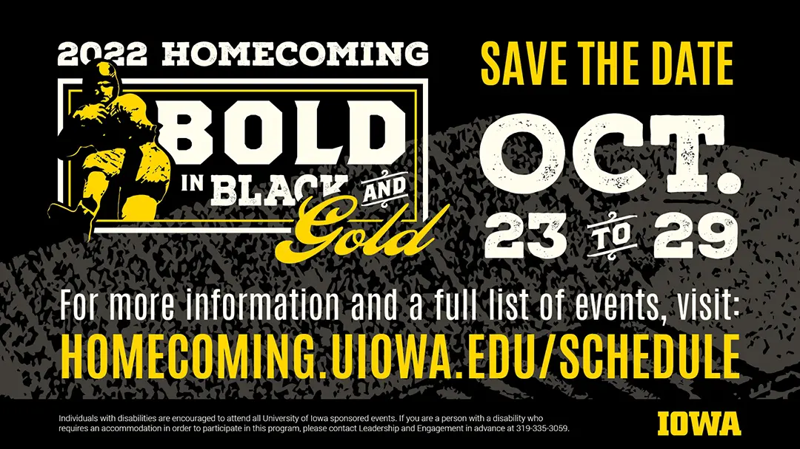
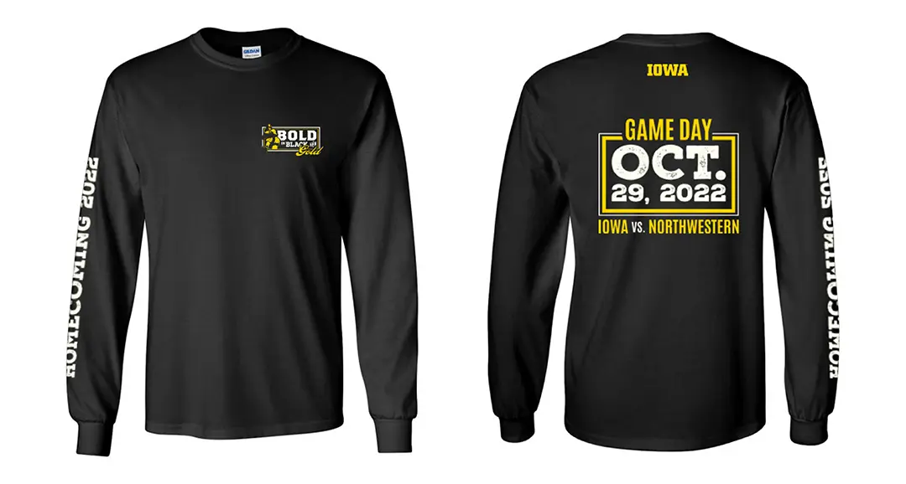
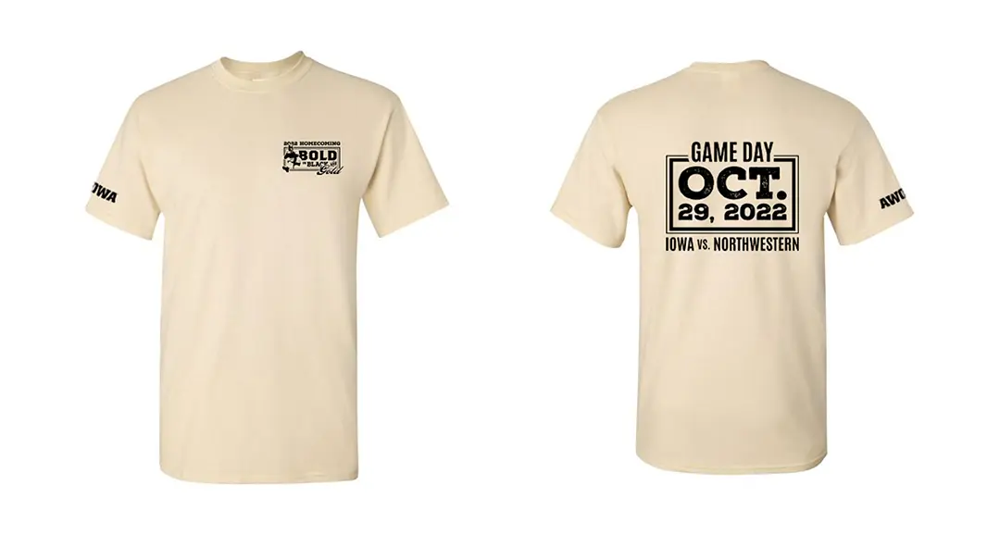
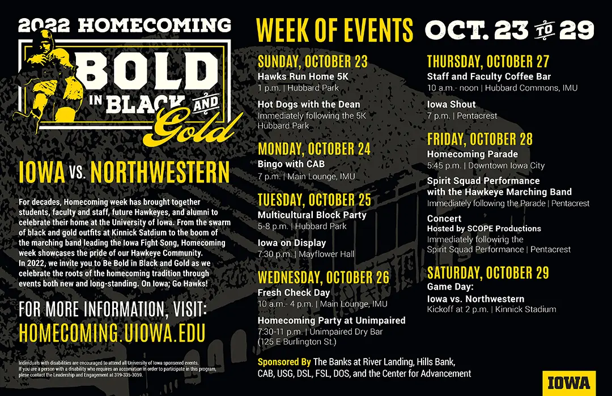
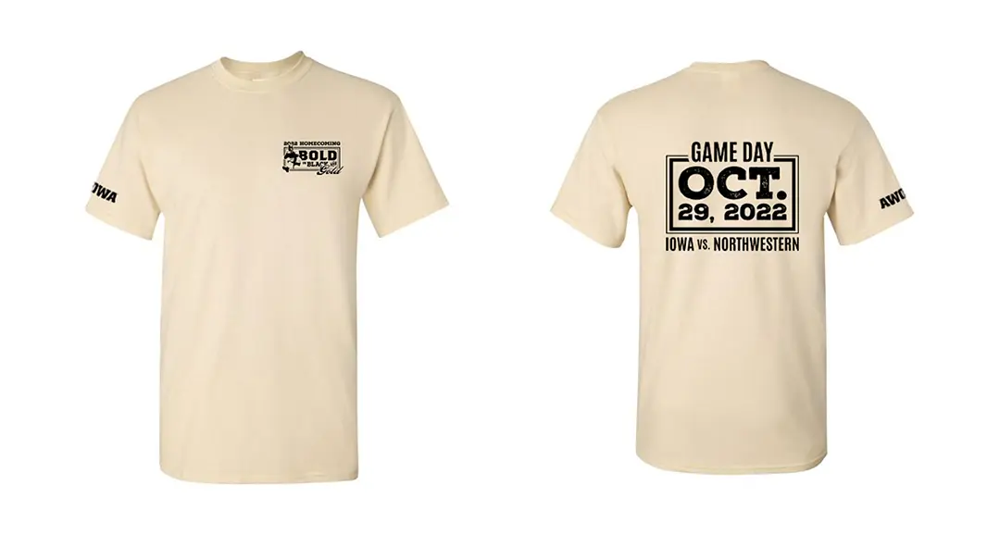
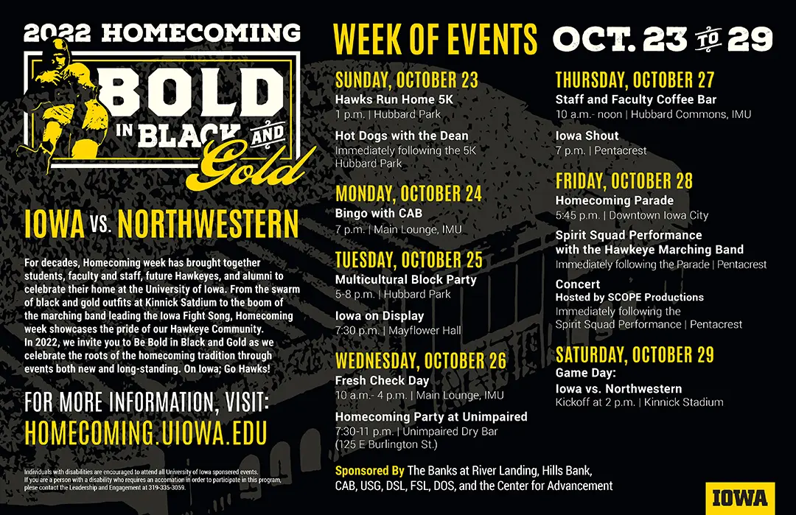
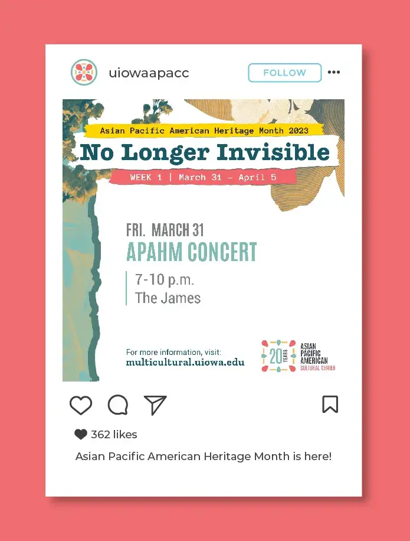
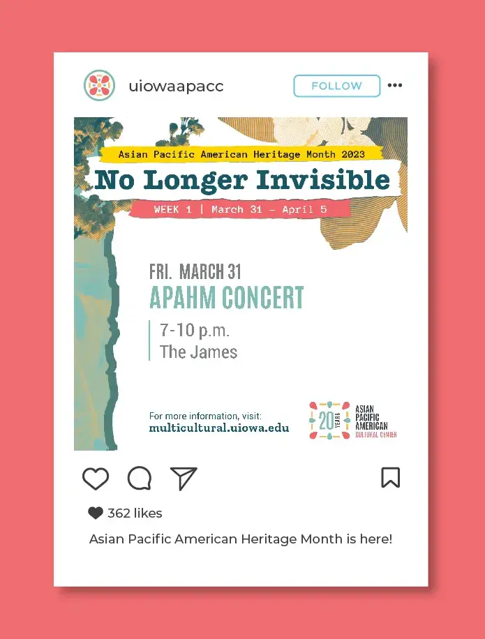
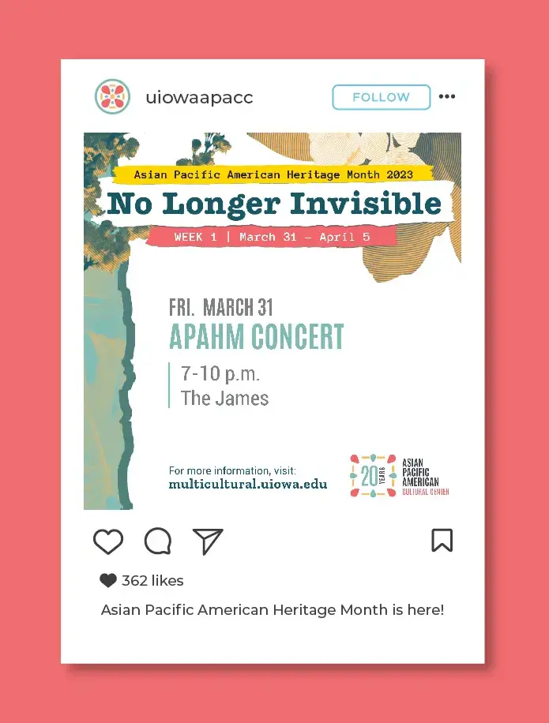
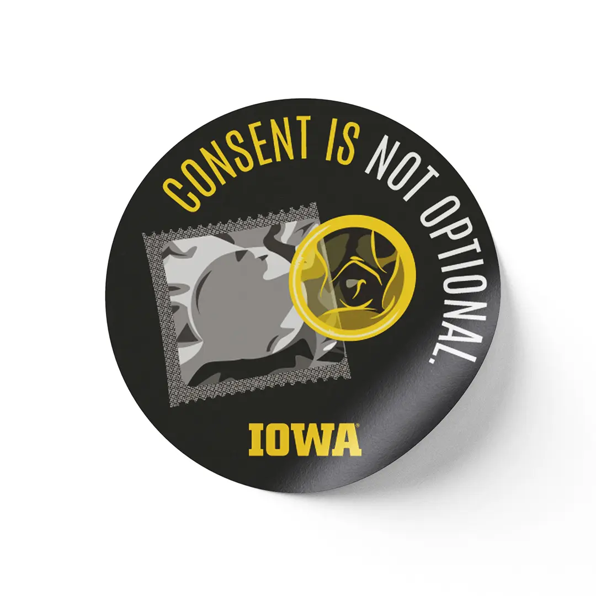

Student Life Communications



 





 





I started at Student Life Communications in 2021 as a Graphic Designer and ended with my graduation as a Design Lead. While working at SLC I successfully advocated for higher wages for the student design staff.